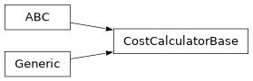

CostCalculatorBase#
Module: iqm.qubit_selector.core.cost
- class iqm.qubit_selector.core.cost.CostCalculatorBase#
-
Base class of the cost models: subclasses score one layout, this class ranks many.
Generic in the result type, so
sort_by_scores()returns the subclass’s own result, e.g.LayoutScoreforFastEdgeCost.Methods
Return
(layout, error)pairs, lowest error first.Return the cost of one layout, where
logical_qubits[i]is placed onlayout[i].Score each layout and return the results, lowest error budget first.
- abstractmethod score_single_layout(layout, interaction_graph, sqg_counts, measured, logical_qubits)#
Return the cost of one layout, where
logical_qubits[i]is placed onlayout[i].- Parameters:
layout (list[str]) – The candidate layout (physical qubits).
interaction_graph (dict[frozenset[str], int]) – Circuit’s 2-qubit interaction graph (logical qubits).
sqg_counts (dict[str, int]) – Single-qubit gate counts per logical qubit.
measured (set[str]) – Set of logical qubit names that are measured.
logical_qubits (list[str]) – Ordered logical qubit names matching layout indices.
- Returns:
The layout’s cost result.
- Return type:
TScore
- sort_by_scores(layouts, interaction_graph, sqg_counts, measured, logical_qubits)#
Score each layout and return the results, lowest error budget first.
- Parameters:
interaction_graph (dict[frozenset[str], int]) – Circuit’s 2-qubit interaction graph (logical qubits).
sqg_counts (dict[str, int]) – Single-qubit gate counts per logical qubit.
measured (set[str]) – Set of logical qubit names that are measured.
logical_qubits (list[str]) – Ordered logical qubit names matching layout indices.
- Returns:
One result per layout, lowest
totalfirst.- Return type:
list[TScore]
- evaluate(layouts, interaction_graph, sqg_counts, measured, logical_qubits)#
Return
(layout, error)pairs, lowest error first.The errors saturate at 1.0 for deep circuits; use
sort_by_scores()there.- Parameters:
interaction_graph (dict[frozenset[str], int]) – Circuit’s 2-qubit interaction graph (logical qubits).
sqg_counts (dict[str, int]) – Single-qubit gate counts per logical qubit.
measured (set[str]) – Set of logical qubit names that are measured.
logical_qubits (list[str]) – Ordered logical qubit names matching layout indices.
- Returns:
List of (layout, error) tuples, sorted by error ascending.
- Return type:
Inheritance
